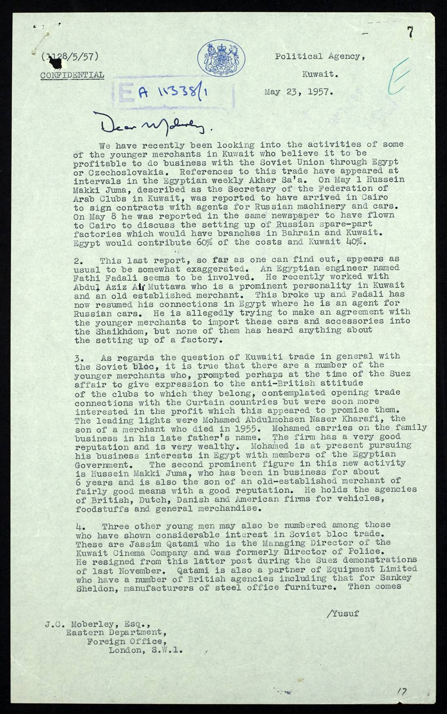

١٩٥٧ · رسالة بريطانية عن العلاقات التجارية بين الكويت والاتحاد السوفيتي
جاسم القطامي العضو المنتدب لشركة السينما الكويتية
ما هي
تذكر الرسالة رجال أعمال كويتيين شبابا مهتمين بالتجارة مع الكتلة السوفيتية، ومنهم جاسم القطامي بصفته العضو المنتدب لشركة السينما الكويتية وشريكا في شركة المعدات المحدودة الوكيلة لشركات بريطانية.
أهميتها
تسجل الحياة التجارية لجاسم بعد الشرطة: شركة السينما الكويتية وشركة المعدات المحدودة.
من المقصود
هو جاسم القطامي نفسه الوارد اسمه الكامل في وثائق أخرى: مدير الشرطة الذي استقال وقت أزمة السويس، ثم النائب القومي في مجلس الأمة.
صور الصفحات

النص الأصلي
المصادر
الأرشيف الوطني البريطاني في لندن، رقمنه الأرشيف الرقمي للخليج العربي (agda.ae). الصور منشورة بإذن من الأرشيف الوطني البريطاني.
مرجع الأرشيف
- FO 371/126948 · Commercial relations between Kuwait and Soviet Union
كيف كُتب هذا النص: نُسخ من قراءة الأرشيف لنص الصورة، وصُحح بالمقارنة مع الصورة حيث كانت القراءة مشوهة. وتشير … إلى نص محذوف. الترجمة العربية من Claude، يرجى مراجعتها.
افتح في الموقع التفاعلي